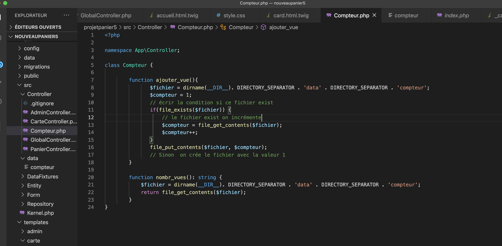

Les ternaires :
à définir

Les TP
Test réfator pour intégrer le competur de visite dans Symfony
Compteur de vue :
1 - créer une class compteur :
- Créer une function ajouter_vue
et analiser les besoins :
// Vérifier si le fichier compteur existe
// Si le fichier existe on incrémente
// Sinon on crée le fichier avec la valeur 1
Chercher dans la doc PHP pour trouver la fonction à ce besoin :
Lien doc PHP :
exit-file :
Doc PHP
dirname :
Doc PHP dirname
le code :

Configurer dans la page principal (ici c'est GlobalController.php) :
class GlobalController extends AbstractController
{
/**
* @Route("/", name="accueil")
*/
public function index(Compteur $compteur): Response
{
return $this->render('global/accueil.html.twig',[
'compteur' => $compteur->ajouter_vue(),
'nombreDeVue' => $compteur->nombr_vues()
]);
}
}
et rajouter une vue simple en h2 dans le template (template/global/accueil.html.twig) :
nombre de visteurs {{ nombreDeVue }}